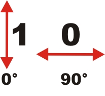
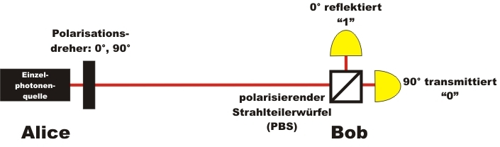
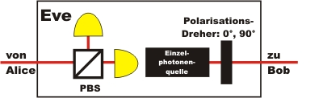

Quantenkryptographie Kapitel 2:
Schlüsselverteilung mit einzelnen Photonen
Im letzten Kapitel zum One-Time-Pad wurde gezeigt, dass die Sicherheit des Verfahrens auf der zufälligen Generierung und sicheren Verteilung eines geheimen Schlüssels beruht. Das One-Time-Pad bietet absolute Sicherheit, wenn der Schlüssel absolut zufällig, nur zwei Personen bekannt und mindestens lange wie die eigentliche Nachricht ist. Die zufällige Generierung und sichere Verteilung eines solchen Schlüssels kann mit Hilfe der Quantenphysik erreicht werden.
Einführung zur Schlüsselverteilung mit einzelnen Photonen
Zur binären Informationsübertragung können einzelne Photonen benutzt werden. Die binäre Information "1" oder "0" wird der Polarisation der einzelnen Photonen zugeordnet. Die binäre "0" entspricht dem linear horizontal polarisierten Photon. Die binäre "1" entspricht dem linear vertikal polarisierten Photon (Abb. 1).

Abb. 1: Lineare Polarisation des Photons und binäre Zuordnung
horizontale Polarisation: "0", vertikale Polarisation: "1"
Alice und Bob sind nun weit voneinander entfernt und möchten, ohne direkt miteinander zu kommunizieren, Informationen austauschen. Alice besitzt eine Sendeeinheit und Bob besitzt eine Empfangseinheit für einzelne Photonen (Abb. 2).
Die Sendeeinheit bei Alice besteht aus einer Einzelphotonenquelle und einem Polarisationsdreher (λ/2-Platte). Jedes Photon aus der Photonenquelle bei Alice ist zunächst vertikal polarisiert. Alice kann mit Hilfe eines Polarisationsdrehers die Polarisation von vertikal zu horizontal drehen. Möchte Alice die binäre "1" übertragen, so dreht sie die vertikale Polarisation des Photons nicht. Möchte Alice an Bob die binäre "0" übertragen, dann dreht sie die Polarisation des Photons mit dem Polarisationsdreher um 90°. Nach der Einstellung der Polarisationsdreher startet Alice die Einzelphotonenquelle mit einem Knopfdruck, wodurch genau ein einzelnes Photon an Bob gesendet wird.
Die Empfangseinheit bei Bob besteht aus einem Polarisationsstrahlteiler und zwei Detektoren. Bei einem Polarisationsstrahlteiler wird horizontal polarisiertes Licht transmittiert und vertikal polarisiertes Licht reflektiert. Jedes einzelne horizontal polarisierte Photon wird somit transmittiert und im "Detektor horizontal" als binäre 0 registriert. Jedes einzelne vertikal polarisierte Photon wird reflektiert und im "Detektor vertikal" als binäre 1 registriert.

Abb. 2: Grundlage der Quantenkryptographie
Soll bei Alice die Polarisationsrichtung um z. B. 90° gedreht werden, so darf der Polarisationsdreher nur auf die Hälfte (45°) des zu drehenden Polarisationswinkels eingestellt werden. Dies ist eine optische Eigenschaft der Polarisationsdreher. Polarisationsdreher besitzen eine Symmetrieachse (optische Achse), die als Spiegelachse für die Polarisation betrachtet werden kann (Abb. 3 links). Beim realen Polarisationsdreher (Abb. 3 rechts) ist die Symmetrieachse durch die weiße Linie gekennzeichnet.
Abb. 3 links: Prinzip Polarisationsdreher: Polarisation von Licht wird spiegelsymmetrisch zur Symmetrieachse gedreht.
Abb. 3 rechts: Polarisationsdreher in Halter mit nur zwei möglichen Einstellungen (0° und 90°)
Schlüsselverteilung im Experiment
Im folgenden interaktiven Experiment kann das Grundprinzip zur Quantenkryptographie durchgeführt werden. Im Experiment ist die Sendeeinheit von Alice von der Empfangseinheit bei Bob ca. 2m entfernt. Auf dem Weg von Alice zu Bob werden nur wenige Photonen absorbiert bzw. gestreut, da die Transmission von Luft bei der Wellenlänge der Photonen von 810nm sehr nahe an 100% liegt.
Im interaktiven Experiment gibt es drei Ansichten: Ansicht Gesamt, Ansicht Alice und Ansicht Bob. Die Wahl der Polarisationsrichtung bei Alice kann im interaktiven Experiment manuell mit Hilfe der grauen Tastern neben dem Polarisationsdreher erfolgen. Wie im realen Experiment kann die Polarisationsdrehung auch automatisch erfolgen (Button "Alice: automatisch"). Zunächst muss der Polarisationsdreher eingestellt werden, danach wird die Einzelphotonenquelle gestartet. Im Experiment selbst wird eine "angekündigte Photonenquelle" benutzt, die im Kapitel 4 erläutert wird.
Der erzeugte Schlüssel muss unvorhersagbar zufällig sein. Dies wird erreicht, indem der automatische Polarisationsdreher über eine Quantenzufallszahl angesteuert wird. Diese Zufallszahl wurde zuvor im Experiment Quantenzufall aufgenommen und gespeichert. Für die absolute Sicherheit muss die Quantenzufallszahl direkt parallel erzeugt werden und ohne Zwischenspeicherung auf den automatischen Polarisationsdreher übertragen werden. Dies ist mit kostengünstigen und kommerziell erhältlichen Quantenzufallsgeneratoren möglich [Idq08] (siehe unter Quantenzufall).
Überprüfen Sie mit dem interaktiven Experiment, ob der Schlüssel eindeutig zwischen Alice und Bob übertragen werden kann. Wäre es für einen Spion möglich, den geheimen Schlüssel unbemerkt zu kopieren?
Beobachtung und Erklärung:
Mit dem Experiment können mit Hilfe der Polarisation von einzelnen Photonen mit Lichtgeschwindigkeit Informationen übertragen werden. Jedes Mal, wenn Alice die binäre 1 sendet, empfängt Bob die binäre 1. Aufgrund von experimentellen Ungenauigkeiten und Messfehlern gibt es sehr selten (in 1% der Fälle) ein Ereignis, bei dem Alice z. B. die binäre 1 sendet und Bob die binäre 0 empfängt (Dunkelrauschen, fehlerhafte Komponenten). Diese Fehler können später durch spezielle Fehleralgorithmen herausgefiltert werden.Durch den Quantenzufallsgenerator beim automatischen Polarisationsdreher ist der erzeugte Schlüssel unvorhersagbar zufällig. Gleichzeitig ist der Schlüssel nur Alice und Bob bekannt. Stimmt diese Behauptung? Könnte eine dritte Person unbemerkt eine Kopie des Schlüssels gemacht haben?
Leider ja. Der Spion Eve (von engl. eavesdropping = Abhören) kann sich mit der folgenden Einheit (Abb. 4) unbemerkt in den Strahlengang einschleichen. Die Einheit von Eve enthält die Empfangseinheit wie bei Bob und die gleiche Sendeeinheit wie bei Alice. Eve empfängt das Photon, kennt somit die Binärzahl und schickt ein entsprechendes Photon mit der gleichen Polarisation an Bob weiter. Was bringt nun die Übertragung des geheimen Schlüssels mit einzelnen Photonen? Bisher absolut keine Sicherheit! Gibt es hierzu weitere Möglichkeiten [weiter]?

Abb. 4: Aufbau für den Spion Eve
Unbemerktes Kopieren des Schlüssels
Originaldaten aus dem Experiment: Zufallsdaten für Polarisationsdreher, Einzelereignisse, kontinuierliche Ereignisse
Zum Kapitel 3: Schlüsselverteilung mit Nachweis eines Spions
Zurück zur Übersicht
Autor: P. Bronner, August 2008